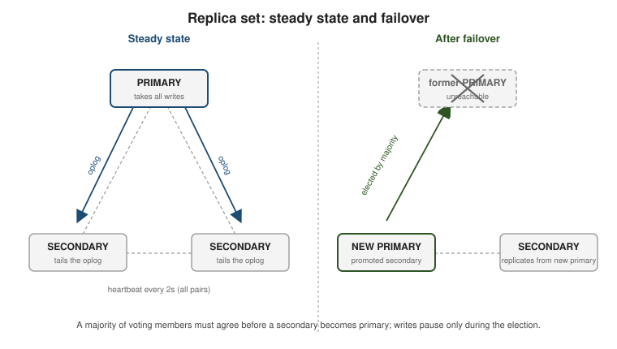

Replica sets & high availability
|
This content was generated with the assistance of AI and should be verified against the official documentation before being relied on in production. |
A replica set is a group of mongod processes that hold the same data. One member is the primary and
takes every write; the others are secondaries that copy the primary’s changes and can step up if it fails.
This page covers how replication works, how a new primary is chosen, and the client-side knobs — read
preference, write concern, read concern — that decide which trade-off between latency, freshness, and
durability a given operation makes.
The running example: a three-member set
Every example on this page, and on the neighbouring pages that need a replica set
(transactions, change streams,
backups), runs against the same small set: three mongod
processes a, b and c, with a preferred as primary, holding the shop.orders collection. The set can be
reproduced with three containers on a private Docker network:
docker network create rs-demo
for n in a b c; do
docker run -d --name rs-$n --network rs-demo --hostname rs-$n \
mongo:8 mongod --replSet rs0 --bind_ip_all
done
docker exec rs-a mongosh --quiet --eval '
rs.initiate({ _id: "rs0", members: [
{ _id: 0, host: "rs-a:27017", priority: 2 },
{ _id: 1, host: "rs-b:27017" },
{ _id: 2, host: "rs-c:27017" }
]})'--replSet rs0 gives the set its name (the replication.replSetName setting in a configuration file). After a
few seconds the members elect a primary; rs.status() reports one PRIMARY and two SECONDARY members, each
secondary syncing from the primary:
rs.status().members.map(m => ({ name: m.name, state: m.stateStr, health: m.health, syncSourceHost: m.syncSourceHost }))[
{ name: 'rs-a:27017', state: 'PRIMARY', health: 1, syncSourceHost: '' },
{ name: 'rs-b:27017', state: 'SECONDARY', health: 1, syncSourceHost: 'rs-a:27017' },
{ name: 'rs-c:27017', state: 'SECONDARY', health: 1, syncSourceHost: 'rs-a:27017' }
]The outputs on this page come from this topology, with the member host names abbreviated to rs-a, rs-b and
rs-c.
The replica set and the oplog
Every write the primary applies is also recorded, in an idempotent form, in the oplog (oplog.rs in the
local database) — a capped collection with a fixed size ceiling that discards its oldest entries once full.
Each secondary opens a tailable cursor on the primary’s oplog, copies new entries as they appear, and replays
them against its own copy of the data. Because oplog entries are idempotent, replaying one twice produces the
same result, which is what makes retryable writes and crash recovery safe.

A brand-new member with no data first performs an initial sync: it copies every database from a source member, records where in the oplog that copy started, then applies every oplog entry produced since to catch up. From then on it just tails the oplog like any other secondary.
See Replication for the overview and
Replica Set Oplog for oplog sizing and the
replSetResizeOplog command.
// https://www.mongodb.com/docs/manual/reference/method/rs.printReplicationInfo/
rs.printReplicationInfo() // oplog size and the time span it currently covers
rs.printSecondaryReplicationInfo() // how far behind each secondary isOn the example set, after inserting two orders:
actual oplog size
'42592.266845703125 MB'
---
log length start to end
'117 secs (0.03 hrs)'
---
source: rs-b:27017
{
syncedTo: 'Tue Nov 10 2026 13:42:42 GMT+0000 (Coordinated Universal Time)',
replLag: '10 secs (0 hrs) behind the primary '
}The oplog is large here because, on WiredTiger, the default size is 5% of the free disk space, bounded between
990 MB and 50 GB. The "log length" is the oplog window: how long a secondary can stay offline and still catch up
from the oplog instead of needing a full initial sync. The window of a freshly created demo set is only minutes;
a busy production set should keep it at many hours. replLag is measured against the primary’s last write, so
a quiet set reports the age of the last operation, not a real delay.
What an oplog entry looks like
An oplog entry is an idempotent, self-contained description of one change. The insert of order 1002 appears as
an op: 'i' entry carrying the whole new document, the session and transaction numbers of the client, and a
timestamp ts (seconds plus an ordinal within the second) that doubles as the replication position:
db.getSiblingDB("local").oplog.rs.find({ ns: "shop.orders", op: "i" }).sort({ $natural: -1 }).limit(1){
lsid: { id: UUID('c1350079-5f79-49f0-aee4-ac2a721d90a8'), uid: Binary.createFromBase64('47DEQpj8...') },
txnNumber: Long('2'),
op: 'i',
ns: 'shop.orders',
ui: UUID('478b244c-9992-4a7b-88d6-37822ea345b3'),
o: { _id: 1002, customerId: 7, status: 'OPEN', total: 5 },
o2: { _id: 1002 },
stmtId: 0,
ts: Timestamp({ t: 1794318162, i: 7 }),
t: Long('1'),
v: Long('2'),
wall: ISODate('2026-11-10T13:42:42.253Z')
}An updateOne that sets status does not log the update operator the client sent. It logs the resulting
change, as a diff (o: { '$v': 2, diff: { u: { status: 'SHIPPED' } } }, with o2: { _id: 1 } naming the
document). Replaying that entry twice leaves the same result, which is the idempotence that makes crash recovery
and retryable writes safe. t is the term of the election that was current when the write happened; it
increases by one on every election and is what lets a returning ex-primary find the point where its history
diverged from the new primary’s.
Elections and heartbeats
Every member sends a heartbeat to every other member every two seconds. When enough heartbeats to the primary go unanswered (default 10 seconds), the secondaries call an election. A candidate becomes primary only if it receives votes from a majority of the voting members of the configured set — so a three-member set tolerates one member down, and a five-member set tolerates two. Without a majority reachable, the set has no primary and rejects writes.
The timing depends on how the primary disappears. With the example set (priority 2 on a):
-
A clean stop of the primary (
docker stop,SIGTERM,rs.stepDown()) makes it step down first, and a secondary is elected in well under a second; the election reason inrs.status().electionCandidateMetricsisstepUpRequestSkipDryRun. -
A crash (
docker kill, that isSIGKILL) closes the primary’s sockets, the secondaries notice the dropped connections at once, and in the test a new primary (aagain, the highest priority) was serving writes about three seconds later, with the killed member shown as(not reachable/healthy)andhealth: 0. -
A silent failure, such as a network partition where packets are simply lost, is only detected by missing heartbeats, so it takes the full
electionTimeoutMillis(10 seconds by default, visible inrs.conf().settings) before an election starts.
Because acknowledged w: "majority" writes are already on at least two members, the new primary has them, and a
driver with retryWrites=true (the default) transparently resends the one in-flight write that failed, using the
session and transaction number to avoid applying it twice.
Members carry per-member settings in the replica set config:
-
priority— a float; a higher value makes a member more preferred as primary.priority: 0means the member can never become primary (but still votes and replicates). -
votes—0or1. A member withvotes: 0does not participate in elections. At most seven members may vote. -
hidden: true— the member is invisible to client read preference and drivers; useful for a dedicated analytics or backup node. Impliespriority: 0. -
secondaryDelaySecs— the member applies oplog entries only after that many seconds have passed, giving a rolling "point-in-time" copy that lags on purpose. It must havepriority: 0, should behidden: true, and should also bevotes: 0(see the warning below).
// https://www.mongodb.com/docs/manual/tutorial/configure-secondary-only-replica-set-member/
const cfg = rs.conf();
cfg.members[2].priority = 0;
cfg.members[2].hidden = true;
cfg.members[2].votes = 0; // see the warning: a delayed voter stalls index builds
cfg.members[2].secondaryDelaySecs = 3600; // one-hour delayed copy
rs.reconfig(cfg);After that reconfiguration, the hidden member is no longer part of what drivers discover:
hello hosts (hidden member invisible): ["rs-a:27017","rs-b:27017"]|
Do not leave a delayed member as a voter. Index builds on a replica set commit only after the members named
by the build’s commit quorum, by default all voting data-bearing members, have finished building the index. A
member that deliberately lags by an hour therefore holds every |
An arbiter is a voting member that holds no data. It exists only to break ties in a set with an even number
of data-bearing members. Prefer adding a real data-bearing secondary instead: an arbiter cannot acknowledge
w: "majority" writes, so with one data-bearing secondary down, a set of primary + secondary + arbiter
cannot satisfy majority write concern and can also expose the cache-pressure "flow control" problem. See
Replica Set Arbiter for the caveats.
Rollback
If a former primary accepted writes that never replicated to a majority, then crashed and rejoined after a
new primary was elected, those un-replicated writes are not on the new primary’s oplog. On rejoining, the old
primary rolls them back: it reverts to the last common oplog point and writes the reverted documents to
rollback files (BSON, under the data directory) for manual recovery. Writing with w: "majority" avoids this
by ensuring an acknowledged write is already on a majority before the client sees success. See
Replica Set Rollbacks.
Read preference
Read preference tells the driver which members a read may target. It does not change consistency guarantees on the primary; it trades freshness and latency.
| Mode | Behavior |
|---|---|
|
Default. All reads go to the primary; an error if there is no primary. |
|
Primary if available, otherwise a secondary. |
|
Reads only from secondaries; an error if none are eligible. |
|
A secondary if any is eligible, otherwise the primary. |
|
The member with the lowest network latency, primary or secondary. |
Any non-primary mode can return stale data, because a secondary may lag the primary. maxStalenessSeconds
(minimum 90) tells the driver to skip secondaries estimated to be further behind than that. Tag sets filter
eligible members by arbitrary key/value tags in the config (for example { region: "eu", disk: "ssd" }), so a
read can be pinned to a data center.
// https://www.mongodb.com/docs/manual/core/read-preference/
db.events.find({ userId: 42 }).readPref(
"secondaryPreferred",
[ { region: "eu" }, {} ], // prefer an eu-tagged member, fall back to any
120 // maxStalenessSeconds
)
// or per connection:
// mongodb://h1,h2,h3/app?replicaSet=rs0&readPreference=nearest&maxStalenessSeconds=120Asking the example set which member actually served a read (the serverInfo.host field of explain() reports it)
shows the effect of each mode when connected with the replica-set URI:
for (const mode of ["primary", "secondary", "nearest"]) {
print(mode.padEnd(10), "->", db.getSiblingDB("shop").orders.find({ _id: 1 }).readPref(mode).explain().serverInfo.host)
}primary -> rs-a
secondary -> rs-b
nearest -> rs-bThe mode is honoured only when the shell or driver is connected to the set. A shell started against one
member’s address (mongosh mongodb://rs-a:27017, which is a direct connection) talks to that member whatever the
read preference says. Tag sets that match no eligible member do not fall back silently: the same read with
readPref("secondary", [ { region: "mars" } ]) waited for the full server-selection timeout (30 seconds) and then
failed with "Server selection timed out". Add an empty tag set {} as the last entry, as in the example above, to
allow a fallback.
Write concern, read concern, causal consistency
Write concern { w, j, wtimeout } decides how many members must acknowledge a write before the driver
returns (introduced in Inserting data & write
concern). For a replica set the important values are:
-
w: "majority"— a majority of data-bearing voting members have applied the write; it will survive any single failover. This is the default. -
w: <number>— an explicit count of acknowledgements. -
w: "<name>"— a custom write concern defined undersettings.getLastErrorModesin the config, built from member tags (for example "one node in each of two data centers"). -
wtimeout— a millisecond cap on waiting forw; on expiry the client gets an error even though the write may still commit later.
// https://www.mongodb.com/docs/manual/reference/write-concern/
// define a custom write concern named "multiDC" from tags, then use it
const cfg = rs.conf();
cfg.settings = cfg.settings || {};
cfg.settings.getLastErrorModes = { multiDC: { dc: 2 } }; // members tagged dc, in 2 distinct values
rs.reconfig(cfg);
db.orders.insertOne({ _id: 1, total: 10 }, { writeConcern: { w: "multiDC", wtimeout: 5000 } })The write-concern timeout deserves a demonstration, because it is commonly misread. With member c stopped, a
majority (a and b) is still available, but w: 3 can never be satisfied:
db.orders.insertOne({ _id: 3, customerId: 42, status: "OPEN", total: 1 },
{ writeConcern: { w: "majority", wtimeout: 3000 } }) // acknowledged
db.orders.insertOne({ _id: 4, customerId: 42, status: "OPEN", total: 1 },
{ writeConcern: { w: 3, wtimeout: 2000 } }) // fails after 2 s
db.orders.countDocuments(){ acknowledged: true, insertedId: 3 }
w:3 -> WriteConcernTimeout | waiting for replication timed out
count on primary: 5The second call raised WriteConcernTimeout, yet the count includes order 4: the write was applied on the
primary, and it will replicate to c when c returns. A write-concern error means "the requested
acknowledgement was not reached in time", never "the write was undone". Treat it as an unknown outcome and make
the operation idempotent (for example by using a deterministic _id, as here).
Read concern decides how consistent and durable the data a read returns must be:
| Level | Meaning |
|---|---|
|
Whatever the queried member has, no durability guarantee. Default on the primary for most reads. |
|
Like |
|
Only data that a majority of members have acknowledged, so it cannot be rolled back. |
|
On the primary only: reflects every write acknowledged with |
|
A single consistent snapshot across the whole read; used with multi-document transactions. |
// https://www.mongodb.com/docs/manual/reference/read-concern/
db.accounts.find({ _id: "a-1" }).readConcern("majority")Causal consistency is scoped to a session. Inside a causally consistent session the server guarantees "read your writes", "monotonic reads", and "monotonic writes" even when reads are served by different secondaries, by passing operation timestamps between calls.
// https://www.mongodb.com/docs/manual/core/read-isolation-consistency-recency/#causal-consistency
const s = db.getMongo().startSession({ causalConsistency: true });
const coll = s.getDatabase("app").tickets;
coll.updateOne({ _id: 7 }, { $set: { status: "closed" } }, { writeConcern: { w: "majority" } });
coll.find({ _id: 7 }).readConcern("majority").toArray(); // sees the update even on a secondary
s.endSession();Configuring and connecting to a set
Start each mongod with the same --replSet name (replication.replSetName in a configuration file), then
initiate the set once from any member and add the rest.
// https://www.mongodb.com/docs/manual/tutorial/deploy-replica-set/
rs.initiate({
_id: "rs0",
members: [
{ _id: 0, host: "h1:27017", priority: 2 },
{ _id: 1, host: "h2:27017" },
{ _id: 2, host: "h3:27017" }
]
})
rs.add({ host: "h4:27017", priority: 0, votes: 0 }) // non-voting analytics node
rs.addArb("h5:27017") // discouraged; prefer a data node
const cfg = rs.conf();
cfg.members[1].tags = { region: "eu" };
rs.reconfig(cfg, { force: false })
rs.status() // member states, election metadata, replication lag, oplog windowApplications connect with a replica-set connection string that lists seed members and replicaSet=; the
driver discovers the full membership and the current primary from any reachable seed, and re-discovers after a
failover automatically.
mongodb://h1:27017,h2:27017,h3:27017/app?replicaSet=rs0&w=majority&readPreference=primaryPreferred&retryWrites=trueDriver-specific URI options and pooling behavior are covered in Drivers & tooling. For scaling writes across many primaries rather than replicating one, see Horizontal scaling with sharded clusters.